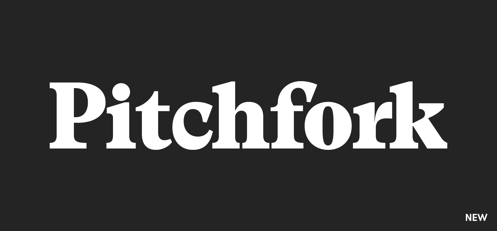

Plastic Beach
Plastic Beach é o aclamado terceiro álbum de estúdio da banda virtual britânica Gorillaz, lançado mundialmente em março de 2010. Considerado por muitos críticos e fãs como a grande obra-prima do projeto idealizado por Damon Albarn e pelo ilustrador Jamie Hewlett, o disco é um marco da música pop contemporânea que mistura synth-pop, hip-hop, funk e música orquestral.
O Conceito da Ilha
Deixando o mundo real para trás e conhecendo o quartel-general da banda

Recepção da civilização
Qual a opinião dos criticos sobre o ambicioso manifesto pop-ecológico de Damon Albarn.

8.5/10" As músicas 'Empire Ants' e 'To Binge' são duas das coisas mais cativantes aqui — elas são arejadas, elusivas e incrivelmente lindas. Fazia anos que Albarn não escrevia algo tão flagrantemente deslumbrante."
Pitchfork"Um banquete pop fenomenal... Albarn mistura gêneros com a habilidade de um cientista maluco, resultando no trabalho mais focado e exuberante do Gorillaz até hoje."
Entertainment Weekly ★★★★☆
★★★★☆
"Ao focar pesadamente nos sintetizadores e na atmosfera marinha, Plastic Beach se transforma no disco mais coeso, maduro e sonoramente deslumbrante que a banda já entregou."
Slant Magazine